Seattle Retrospective
Overview#
From December 13th to December 25th, I was on vacation in Seattle, Washington. I inhabited three friends’ places across my trip, each with a varying degree of transit accessibility. It was a trip I desperately needed after a strenuous semester that pushed my abilities to manage changes in my work and personal life to their limits, and was one that I took full advantage of. I chose to travel somewhere dear to my heart from my childhood and adolescence; I had been to Seattle three previous times, first in 2010, then in 2015, and finally most recently in 2018. Each time I stayed with relatives in the city, but now for the first time, I decided where I would stay on my own and had full agency over my itinerary.
Where I Stayed#
Redmond#
The first place I stayed in was Redmond, a sort of corporate city most known for being the primary office location of Microsoft. As of December 2025, the project to connect the 1 and 2 lines on SoundTransit’s Link light rail has not yet been completed. Thus there is a serious gap in service for getting between Redmond and Seattle. This gap is made up by a variety of express buses that run quite frequently at peak hours.
However, for many locations within Redmond, just this is insufficient. You likely need to take a connecting bus to transfer to a location where the SoundTransit express bus stops; this is where the experience degrades significantly.
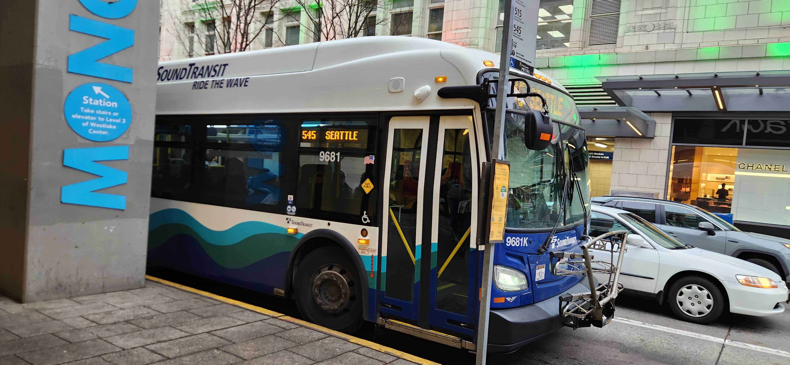
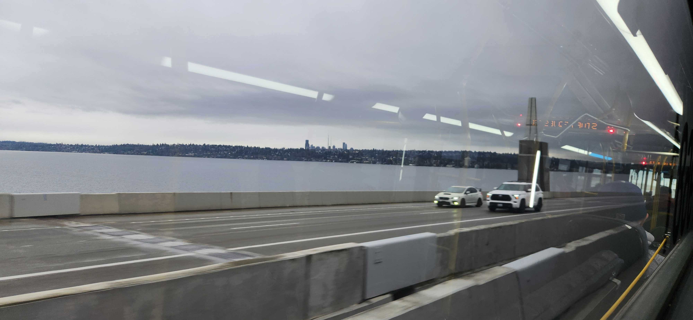
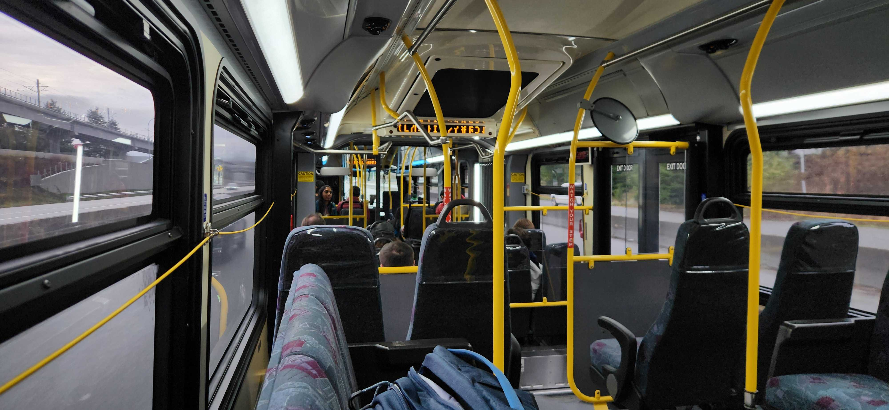
(Figure 1. SoundTransit Express bus)King County Metro does run buses that go to some of these neighborhoods surrounding Redmond, but these neighborhoods are so suburban that the headways for these routes are quite bad (an hour on weekends!) There is not a lot to do in Redmond, but I didn’t particularly look very hard because I greatly prefer the city environment. It wasn’t too difficult finding places to eat in Redmond; there were a plethora of 5-over-1 apartments with built-in ground floor storefronts for restaurants and shops. By the end of two days, I was thankful to be somewhere not quite so far away from it all.
Fremont#
The second place I stayed in was Fremont, a neighborhood north of Seattle across the (name of bay here). This segment of my trip was the one that impressed me the most with respect to transit access. I was a 1 minute walk away from a route 5 stop, which is what I used while getting there for the first time. More importantly to me, I was just 3 blocks from a route 44 stop and around 6 blocks from a E line stop.
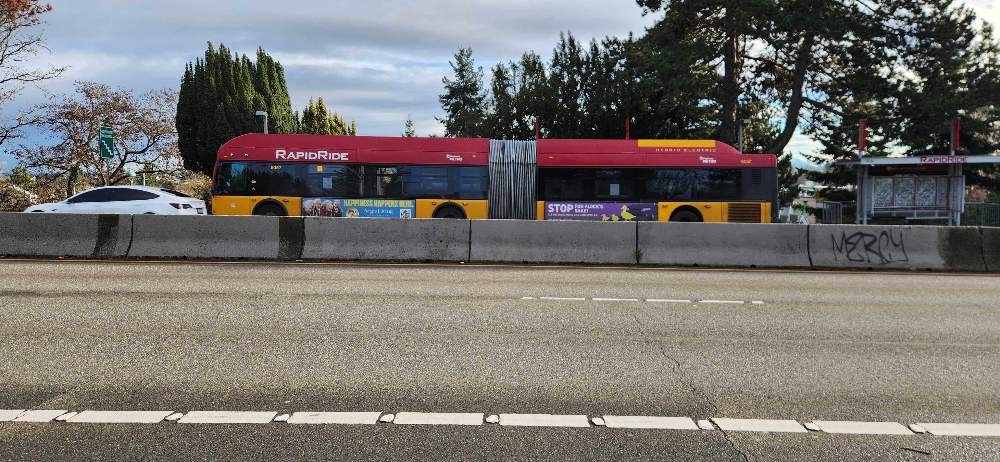
(Figure 2. A New Flyer DE60LFR running on the E line on Aurora avenue.)The E line impressed me tremendously; it runs on a bus-only lane all along Aurora avenue, there are dedicated stations, each with off-vehicle payment and E-ink time displays. The E line was also extremely frequent: I don’t think I waited more than 8 minutes for a bus at all during my time using it, and my median wait time was probably 4 minutes. Also, Fremont has a direct connection to UW Seattle via the route 44 which is served regularly by trolleybus! I spent a considerable amount of time in the Suzzallo/Allen libraries on campus on my trip there.
I did not explore the neighborhood itself very much; the (name of) zoo was essentially 2 blocks away, but I never went to it partially on account of the famous Seattle fall/winter weather. I saw some missing-middle density housing throughout the neighborhood of the new-build variety, but overall the density of the neighborhood was lower than somewhere I would be interesting in moving to.
Ballard#
The third and final place that I stayed during my trip to Seattle was in Ballard. This neighborhood had a similar composition to Fremont from what I saw of it. My main way of getting to downtown Seattle from Ballard was the D RapidRide line. This line was not nearly as expeditious as the E was; instead of under 10 minutes from my stop to downtown, it was some 20-25 minutes. There were far more stretches with no dedicated bus lanes than on the E line which made for slower service. The route 44 also travelled here, though it was a bit of a walk for me, so I only ended up using it once (getting there); the University of Washington was also closed by then, so I had no real need for this route.
The RapidRide System#
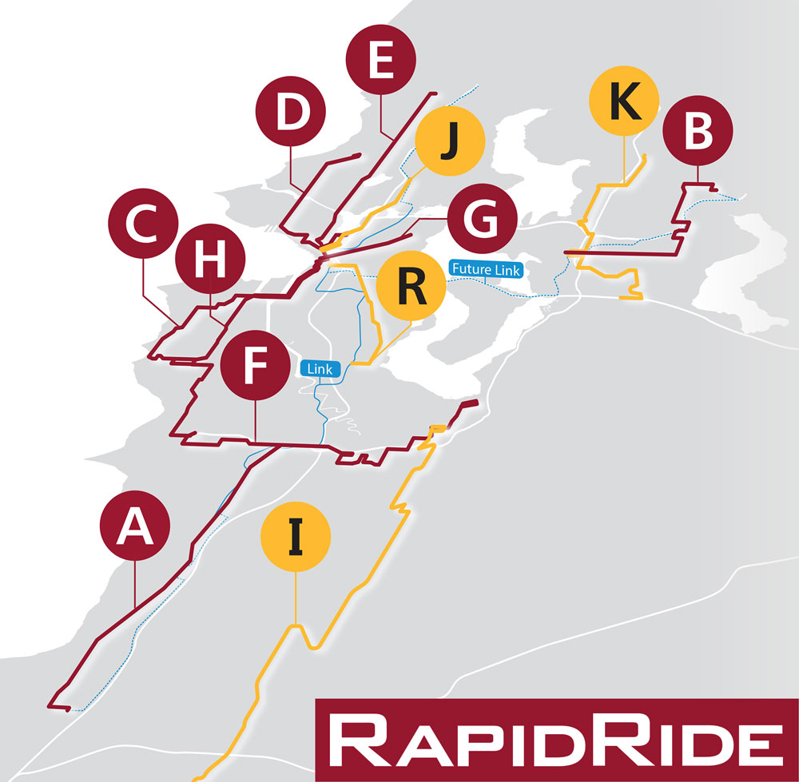
(Figure 3: A diagram of the RapidRide system.)I used many of the RapidRide lines to get around the city, trying some of them out to see the benefits offered by the dedicated infrastructure. They were generally speedy and had a dedicated fleet (painted red). I don’t think I have any complaints about vehicle frequency, I never waited more than 15 minutes for any route during my vacation during the day. An interesting note is that the G line has a fleet of buses with 5 doors (two sides) and indoor bike racks, which are missing from other lines. It also to my knowledge is a quite new bus line: I had cause to use it two times on my trip and found it an interesting experience, though I was unsure about why the infrastructure was set up the way it was. Perhaps some research is in order on this note.
The buses themselves were comfortable and quite varied. I experienced an Orion VII for the first time in my life on this trip; I found the interior quite spacious, though it did seem a bit short of horizontal space. As far as I could tell, nearly every bus I was on was a diesel-electric hybrid if they weren’t fully electric (trolleybuses or battery electric).
I got to ride some of my favorite buses as well: the LFRs with older hybrid transmissions. In addition to a truly shockingly large bus fleet, Seattle also has several streetcars which run through areas of high demand and visibility like Capitol Hill, Downtown, and South Lake Union, the last of which has a large proportion of tech workers. Unsurprisingly, the streetcar is probably the weakest of all the systems, as streetcars tend to get stuck in traffic and offer very little benefit besides “capacity” and “being a train”. The 3rd avenue Busway is one of the most active busways I’ve ever seen: it surpasses Pittsburgh’s East Busway by a considerable margin too!
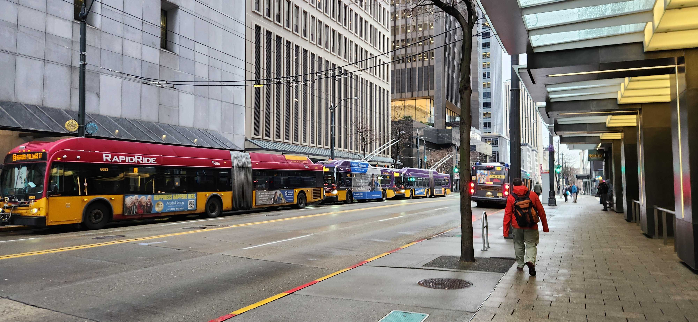
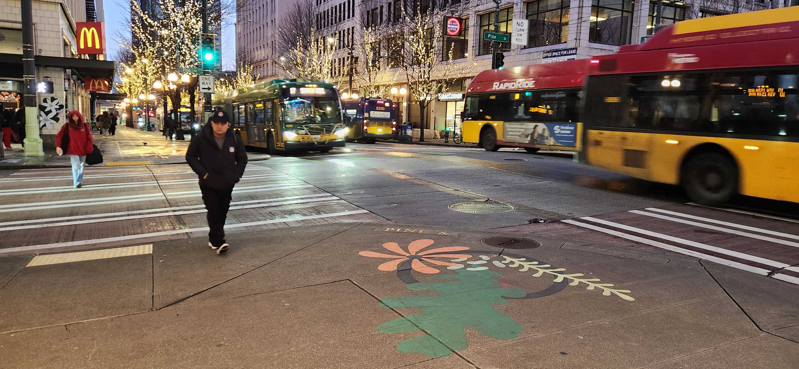
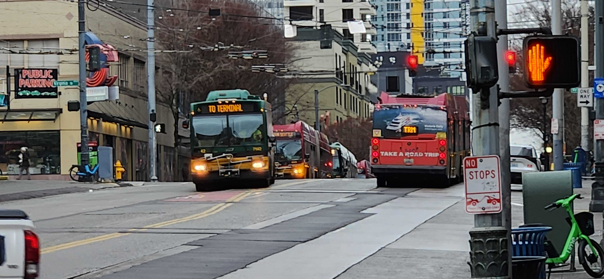
 (Figure 4: Buses on 3rd ave.)
(Figure 4: Buses on 3rd ave.)
Link#
Seattle is served by two light rail lines: the 1 line, which goes from Federal Way Downtown to Lynwood City Center and the 2 line, which goes from Downtown Redmond to (destination here). The 1 and 2 are not yet connected so there is an awkward gap along Mercer Island through which the two lines are slated to connect in the future. I don’t have a ton to say about Link on this trip, it has a quite long track length and I didn’t use it a ton.
On my trip, I visited the neighborhood of Capitol Hill many times. It represented the peak of my thoughts of living in Seattle: there are many different housing density offerings, many shops and restaurants, a thriving LGBTQ+ friendly environment, and great transit connectivity. There is a Link station there which connects it to the university district, downtown, the airport, and many other neighborhoods and areas.
Airport#
For travelers, especially on a budget, good transit connections to the airport are crucial. As of 2025, the Link light rail does not really run to the airport for a considerable portion of the night. Thus for many people, the routes they must rely on are the 124 (which goes from downtown Seattle to the airport) and the 161 (which goes from Burien to the airport, but which was harder for me to access.) My trip to the airport was outside of normal operating hours, so a reduction in service is understandable. However, this is probably the worst experience I have ever had trying to get to the airport of a major city on transit in the last 5 or so years. I took a once-hourly D line to downtown, waited around 25 minutes once there in chilly weather for the 124 to the airport and then disassociated for the remainder of that trip. Being downtown late at night in a major city usually isn’t a problem for me, but there were a few belligerent passengers on the bus who tried talking to me when I very much did not want to talk to them.
Other stuff!#
I got to see my favorite NFL stadium in person up-close for the first time! I finally got to get a replacement beanie there too, which I have not had since 2024. Also I was in town for the Lambs blowing a 16 point 4th quarter lead :) I rode a ferry to Bainbridge island and back! The trip was around 20-30 minutes each way and offered some spectacular and gorgeous views of the Puget Sound and city of Seattle. For $10.50, I can think of far worse things to spend your money on. There was a shockingly robust set of ferry routes to choose from; I have no idea what the experience of using them regularly is like, but I imagine it must be decent coverage and frequency for what it is.
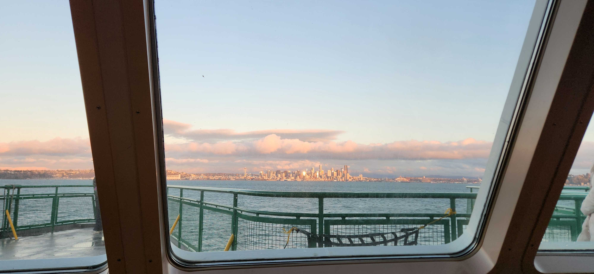
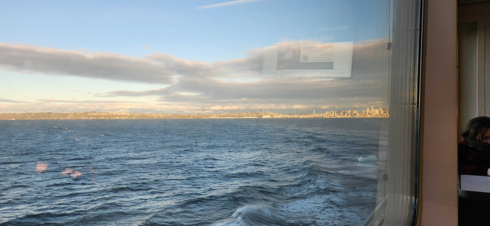
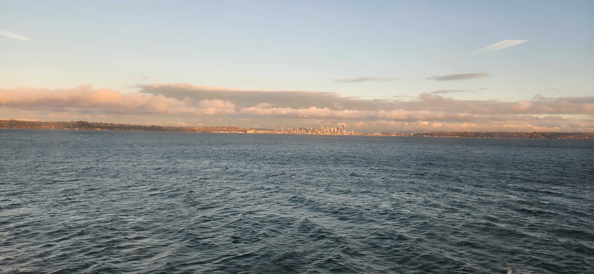
(Figure 5: Views of Seattle from the Bainbridge Island ferry.)I also was quite impressed with the Orca system: it seems to be usable on many different transit agencies across the greater Seattle area. King County Metro buses have multi-door boarding, which may be the first time I have seen such a system on a bus in my life and actively used it! (With the exception of New York City, because I just haven’t had cause to ride many buses around there.) Also, Furries! I don’t think I’ve ever been in such close proximity to so many furries anywhere outside of a furry convention. The second day I was in town I ended up taking another SoundTransit express bus over to the Vulpine Taproom and the Burrow: I spent a few hours there getting some work done and chatting with many friends, some of whom I had just met for the first time!
Looking Forward#
I would love to visit the area again! I have many friends there and I am certain that there are many things that I would love to do and didn’t have a chance to (or know about). I would like to experiment with more of the other transit agencies around the area; I want to try riding one of the double decker SoundTransit buses. I want to ride all the remaining RapidRide lines across their entire length. I want to find some cheaper good places to eat food in Seattle (very difficult!) Thank you to everyone who hosted me for doing so, I am immensely grateful for it. I once again hope that through writing on my website, I am able to positively influence someone’s life and contribute in a positive way to both my own experience in the fandom and other people’s.
Thank you for reading! Love, Aured